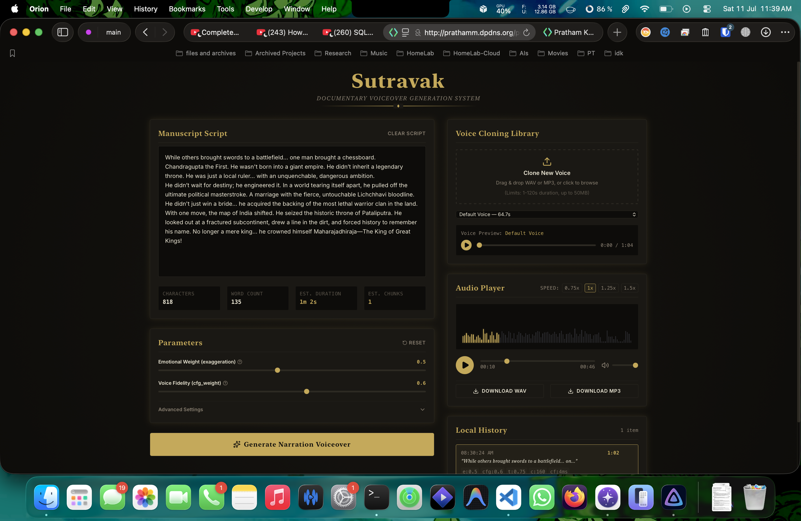

All Projects
The complete set — every project lives on my self-hosted laptop-server and is containerized with Docker, so a demo may take a moment to wake up or occasionally stumble under shared load. If a Live Demo is unreachable, give it a second and retry, or jump straight to the source on GitHub.

Sanjaya
A multi-modal AI system that turns live video into searchable semantic text — vision-language models store meaning, not months of raw footage, with real-time RAG retrieval over a vector database.

VocalNote
Turns any PDF into a natural-sounding narrated podcast, fully offline via local LLM inference and Kokoro TTS — no cloud, no GPU. Officially recommended by my university and adopted by 200+ students in two weeks.

CodeLab
A shared coding room where a team writes and runs Python together, live — real-time sync over Socket.IO, in-browser execution, user presence, and one-click .py export. Pair programming without the screen-share.

Telugu-OCR Pipeline
A from-scratch OCR + NLP pipeline (91% character accuracy, 30% faster throughput) paired with a fine-tuned Telugu LLM. Built during my Swecha internship, it digitized 10,000+ archival documents for 5M+ native speakers.

Belirix
A local-first conversational vision assistant for hardware technicians at BHEL Hyderabad — a quantized VLM runs entirely on-device so technicians can point a camera at equipment and get context-aware troubleshooting with no internet.

Sutravak
Sutravak is a locally-hosted, privacy-focused full-stack web application designed for content creators, historians, and educators to generate production-grade AI voiceovers for history narration and documentary-style videos.
Project - 7
Full write-up in progress — this project is being documented and will land here soon.